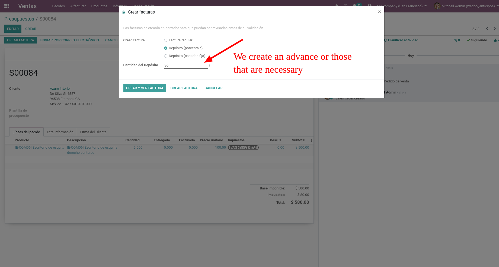
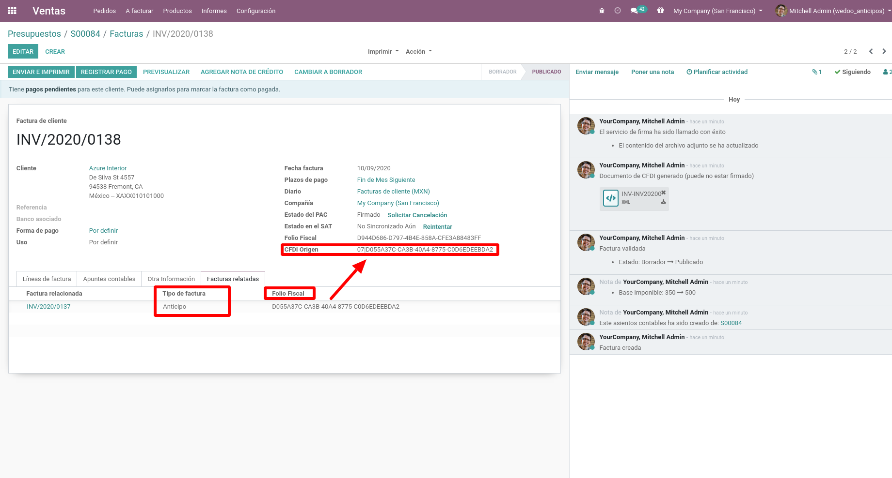
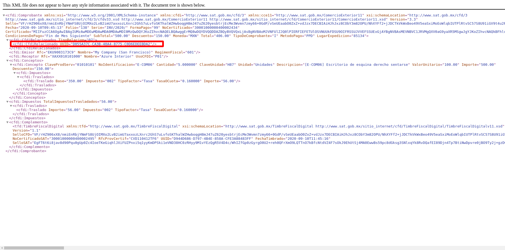

In order to deduct advances that were created from a sales order into a final invoice you have to follow the next steps.
1.- Create advances in the sales order:
We must create advances from the sales order before creating the invoice for the quantity sold or delivered. 2.- Sign the advance.
The advance is of a single invoice line with the product configured to express the advances, it is stamped so that it can be deducted in the final invoice.
3.- Create final invoice and deducting advances.
When we invoiced the sales order, the advances that can be deducted in the final invoice will automatically be listed if the option to deduct advances is checked, at least one advance from the list must be marked, if the total of the selected advances exceeds the amount to invoice, will send a raise message indicating that it is not possible to deduct more than what will be invoiced. FYI: To obtain the advances they have to meet the following conditions:- Marked as an advance
- It has to be posted
- The SAT status has to be valid.
- Having a fiscal folio.
4.- Final invoice with deducting advances..
In order to deduct the advances to the final invoice we take the sum of the untaxed amount of all advances and we obtain the advance percentage to be applied to each invoice line by the next operation: (amount advance / amount untaxed) * 100. This percentage is applied to the price subtotal of each line to get the price unit of the invoice line, if the line has quantity higher than 1 then we divide the (price unit / quantity) and the result is the price unit for the invoice line.When the final invoice is created by deducting advances, the fiscal folio of the advances are taken and placed into the cfdi origin field with code 07 like this exampla: 07|4C585E0D-1AB3-4FAD-860C-5EA59DA16628,7ED7C7B6-AF87-48A4-8423-58BCD806BED6. is entered in the related invoices tab, the advances are listed.
Finally, the signed cfdi contains the fiscal folios of the advances related to the invoice.
